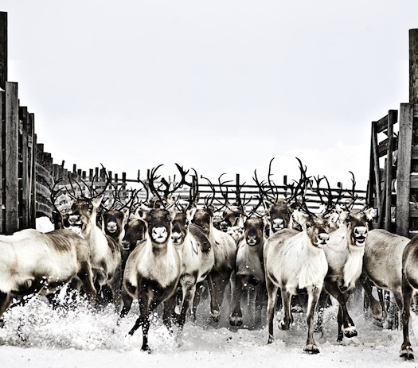
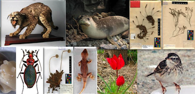

Arctic Tracks is an educational pathway focusing on presenting the Arctic region. This is achived through following two different tracks in the permanent exhibition of the Arctic Centre, the track of a biologist and the track of an anthropologist. The objective is to provide the students with basic knowledge of what consitutes the Arctic and to present the work of biologists and anthropologists.
source: Arctic Center

Gather information and evidences about the Neanderthals and the modern Homo sapiens. (They appearance, they adaptive attributions, they everyday life.) Dispelling misconceptions. Find the answer to the question: What can be the couse of the extinction of Neanderthals?
source : Hungarian Natural History Museum

This cross collection pathway is addressed to families and aims to offer knowledge on different subjects: Mediterranean Basin Biodiversity and its importance as an “Biodiversity Hotspot”;Endemic species from Greece and Portugal; Economic relevance; Biodiversity conservation
source : Natural History Museum of Lisbon